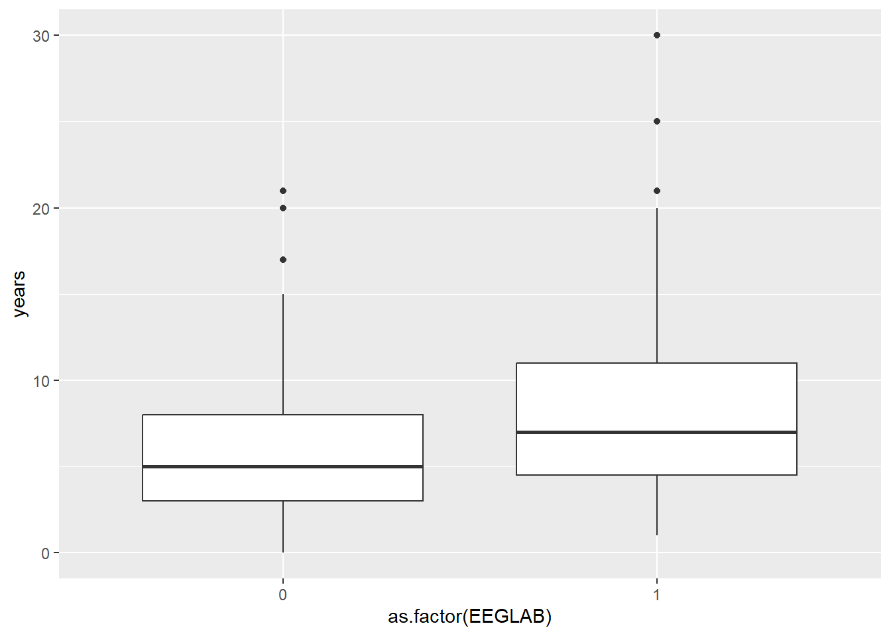
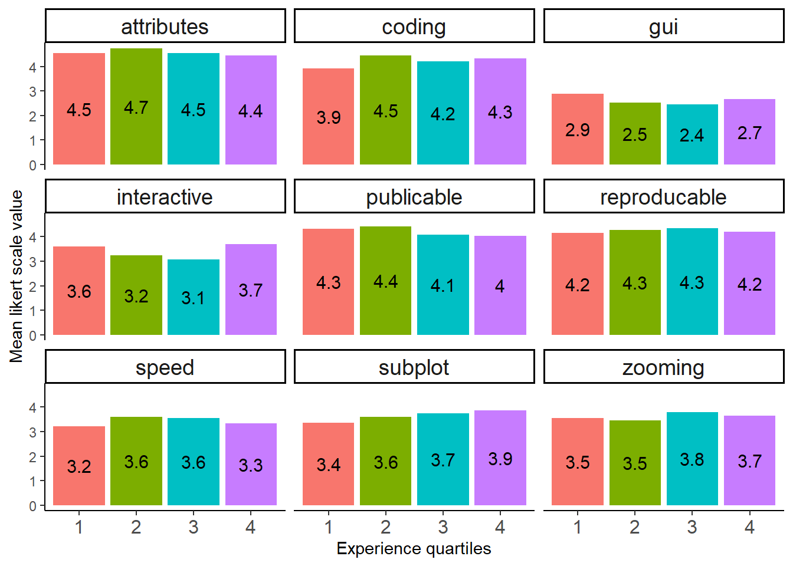
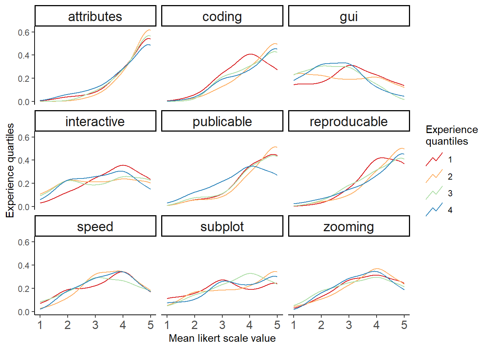
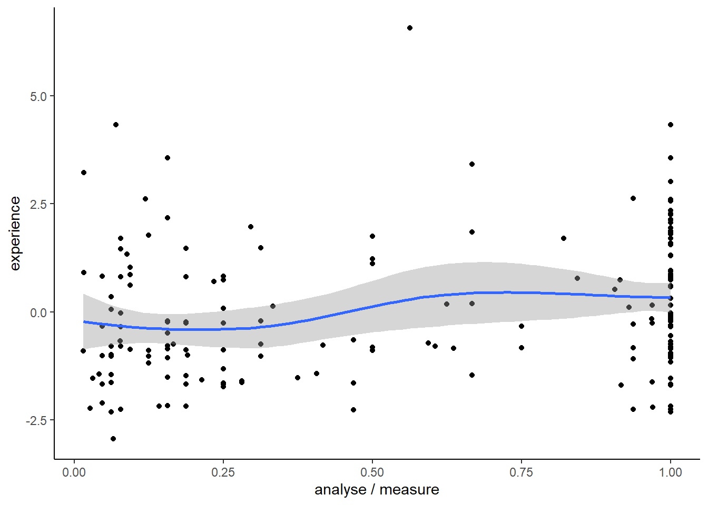

Linear models
Setup
Show the code
data <- read_excel("data/results-survey.xlsx")
data <- data[1:121] %>%
filter(.[[18]] !='Yes') # not analysed any EEG methodExperience factor
Show the code
m = FAMD(exp_data[1:5], ncp=2, axes=c(1,2))


Show the code
# pics <- fviz_famd_ind(m, col.ind = "cos2",
# gradient.cols = c("#00AFBB", "#E7B800", "#FC4E07"),
# repel = TRUE)Show the code
factor_scores <- as.data.frame(m$ind$coord)
head(factor_scores) Dim.1 Dim.2
1 -0.47174407 1.4097273
2 -0.42577958 0.3429289
3 0.05764252 -0.3374638
4 0.43679041 -1.2564451
5 -0.08151050 -0.4608666
6 0.45156717 -1.2526304Show the code
cbind(data[20], factor_scores[1]) %>%
rename_at(vars(colnames(.)), ~ c("years", "proxy")) %>%
with(cor.test( proxy, years)) %>%
broom::tidy()# A tibble: 1 × 8
estimate statistic p.value parameter conf.low conf.high method alter…¹
<dbl> <dbl> <dbl> <int> <dbl> <dbl> <chr> <chr>
1 0.964 52.9 1.02e-123 211 0.953 0.973 Pearson's p… two.si…
# … with abbreviated variable name ¹alternativeShow the code
#lm(data=.,years ~ proxy) %>% summary(.)Experience and …
Up or down
Show the code
cbind(data[79], factor_scores[1]) %>%
rename_at(vars(colnames(.)), ~ c("ud", "proxy")) %>% filter(!is.na(ud)) %>%
mutate(ud = ifelse(ud=="Up", 1, 0)) %>%
t.test( proxy ~ ud , data=.) %>%
broom::tidy()# A tibble: 1 × 10
estim…¹ estim…² estim…³ stati…⁴ p.value param…⁵ conf.…⁶ conf.…⁷ method alter…⁸
<dbl> <dbl> <dbl> <dbl> <dbl> <dbl> <dbl> <dbl> <chr> <chr>
1 -0.103 -0.0667 0.0368 -0.706 0.481 191. -0.393 0.186 Welch… two.si…
# … with abbreviated variable names ¹estimate, ²estimate1, ³estimate2,
# ⁴statistic, ⁵parameter, ⁶conf.low, ⁷conf.high, ⁸alternativeShow the code
cbind(data[79], factor_scores[1]) %>%
rename_at(vars(colnames(.)), ~ c("ud", "proxy")) %>% filter(!is.na(ud)) %>%
ggplot(., aes(x=as.factor(ud), y = proxy)) +
geom_boxplot() + labs(x = "Aware or not abour colorbar controvercies", y = "Experience") + theme_classic()
Colorbars
Tools
Show the code
vec <- names(data[25:51]) %>% str_split_i(., "\\? \\[", 2) %>% str_sub(., 1, -2)
software <- data[25:51] %>%
rename_at(vars(colnames(.)), ~ vec) %>% #mutate(`Custom scripts` = ifelse(Other == "Custom scripts", "Yes", `Custom scripts`)) %>%
dplyr::select(-Other) %>%
mutate_at(vars(vec[1:26]), function(., na.rm = FALSE) (x = ifelse(.=="Yes", 1, 0))) %>%
cbind(data[20], .) %>% dplyr::rename(years = !!names(.)[1]) %>% filter(years < 50) %>%
select_if(colSums(.) != 0)Show the code
a <- software %>%
select_if(colSums(.) > 10)
res <- a %>% dplyr::select(years, BESA) %>%
group_by(BESA) %>% dplyr::summarise(mean(years)) %>% dplyr::rename(., Usage = BESA, BESA = `mean(years)`)
cn <- colnames(a[3:length(a)])
for (i in 1:length(cn)){
tmp <- a %>% dplyr::select(years, cn[i]) %>%
group_by_at(2) %>% dplyr::summarise( mean(years)) %>% dplyr::select(-1)
colnames(tmp) <- cn[i]
res <- cbind(res, tmp)
#print(cn[i])
}
res %>% t() %>%
row_to_names(row_number = 1) %>% data.frame() %>% dplyr::rename(., not_used = X0, used = X1) %>%
tibble::rownames_to_column(., "software") %>%
dplyr::mutate(., not_used = round(not_used, 2), used = round(used, 2)) %>%
dplyr::mutate(., status = ifelse(not_used > used, "younger", "older")) %>%
mutate(status = cell_spec(status, color = ifelse(status == "younger", "green", "black"))) %>%
kable(escape = F, booktabs = T) %>% kable_styling("striped", position = "center",) %>%
add_header_above(header = c(" " = 1, "Mean years of user experience" = 3)) %>%
kable_classic(full_width = T, html_font = "Arial")| software | not_used | used | status |
|---|---|---|---|
| BESA | 7.45 | 9.92 | older |
| Brainstorm | 7.26 | 9.29 | older |
| Brain Vision Analyser | 7.39 | 8.35 | older |
| EEGLAB | 5.95 | 8.58 | older |
| ERPLAB | 7.18 | 9.16 | older |
| FieldTrip | 6.89 | 8.44 | older |
| LIMO | 7.37 | 10.60 | older |
| MNE-Python | 7.94 | 7.12 | younger |
| SPM | 7.51 | 8.58 | older |
| Unfold | 7.55 | 8.31 | older |
| Custom scripts | 7.23 | 8.22 | older |
Number of used software
Show the code
vec <- names(data[25:50]) %>% str_split_i(., "\\? \\[", 2) %>% str_sub(., 1, -2)
software <- data[25:50] %>%
rename_at(vars(colnames(.)), ~ vec) %>%
mutate_at(vars(vec), function(., na.rm = FALSE) (x = ifelse(.=="Yes", 1, 0))) Show the code
cbind(data.frame(rowSums(software)), factor_scores[1]) %>%
rename_at(vars(colnames(.)), ~ c("n_soft", "experience")) %>%
filter(n_soft > 0) %>%
ggplot(., aes(x=n_soft, y=experience)) + geom_jitter() + geom_smooth()
Show the code
cbind(data.frame(rowSums(software)), factor_scores[1]) %>%
rename_at(vars(colnames(.)), ~ c("n_soft", "experience")) %>%
filter(n_soft > 0) %>%
lm(data=., n_soft ~ experience) %>% summary(.)
Call:
lm(formula = n_soft ~ experience, data = .)
Residuals:
Min 1Q Median 3Q Max
-2.2263 -1.0671 -0.0685 0.9654 7.9333
Coefficients:
Estimate Std. Error t value Pr(>|t|)
(Intercept) 3.03351 0.12359 24.546 <2e-16 ***
experience 0.10920 0.08584 1.272 0.205
---
Signif. codes: 0 '***' 0.001 '**' 0.01 '*' 0.05 '.' 0.1 ' ' 1
Residual standard error: 1.795 on 209 degrees of freedom
Multiple R-squared: 0.007684, Adjusted R-squared: 0.002936
F-statistic: 1.618 on 1 and 209 DF, p-value: 0.2047Features
Show the code
feature <- data[52:60] %>% rename_all(., ~str_split_i(colnames(data[52:60]), "\\? \\[", 2) %>%
str_sub(., 1, -2) ) %>%
mutate_at(c(colnames(.)),
funs(recode(.,
"Very important"= 2, "Important"= 1, "Neutral"= 0,
"Low importance"= -1, "Not at all important" = -2 ))) %>%
cbind(., factor_scores[1]) %>%
filter_all(all_vars(!is.na(.))) %>%
rename_at(vars(colnames(.)), ~ c("subplot", "attributes", "speed", "publicable", "reproducable",
"zooming", "interactive", "gui", "coding", "experience")) %>%
mutate(experience = round(experience, 2), exp_cut = cut(experience, 4, labels = c("25%", "50%", "75%", "100%")),
exp_quant = factor(ntile(experience, 4))) %>%
group_by(exp_quant) %>% dplyr::mutate(n = n()) %>% ungroup() Show the code
table(feature$exp_quant)
1 2 3 4
50 50 49 49 Show the code
feature %>%
pivot_longer(cols = subplot:coding, names_to = "feature", values_to = "likert") %>%
mutate(likert = likert + 3) %>%
group_by(feature, exp_quant) %>% dplyr::summarise(m = mean(likert)) %>%
ggplot(aes(y = m, x= exp_quant, fill = exp_quant)) +
geom_bar(stat = "identity") +
#geom_smooth(aes(y = value, x= experience, color = str_wrap(name, 20)), bw = 0.5, method = "loess", span = 0.7) +
labs(y = "Mean likert scale value", x="Experience quartiles", color = "Features") + theme_classic() +
theme(legend.position = "none",
legend.key.height=unit(2, "cm"),
axis.text.x = element_text(size = 12),
strip.text = element_text(size = 14)) +
facet_wrap(~str_wrap(feature, 20)) +
geom_text(aes(label = paste0(round(m, 1))), position = position_stack(vjust = 0.5), size = 4) 
Show the code
feature %>%
pivot_longer(cols = subplot:coding, names_to = "feature", values_to = "likert") %>%
mutate(likert = likert + 3) %>%
ggplot(aes(x = likert, fill= experience, colour = exp_quant)) +
geom_density(key_glyph = "timeseries", bw = 0.5) +
labs(x = "Mean likert scale value", y="Experience quartiles", color = "Experience\nquantiles") +
theme_classic() + scale_colour_brewer(palette = "Spectral") +
theme(legend.position = "right",
#legend.key.height=unit(2, "cm"),
axis.text.x = element_text(size = 12),
strip.text = element_text(size = 14)) +
facet_wrap(~str_wrap(feature, 20)) 
Channels
Show the code
data %>% select(23, 24) %>%
cbind(., factor_scores[1]) %>%
rename_at(vars(colnames(.)), ~ c("measure", "analyse", "experience")) %>%
filter(analyse < 500) %>%
mutate(rate = analyse / measure) %>%
ggplot(., aes(x=rate, y=experience)) +
geom_point() + geom_smooth() +
labs(x ="analyse / measure") +
theme_classic()